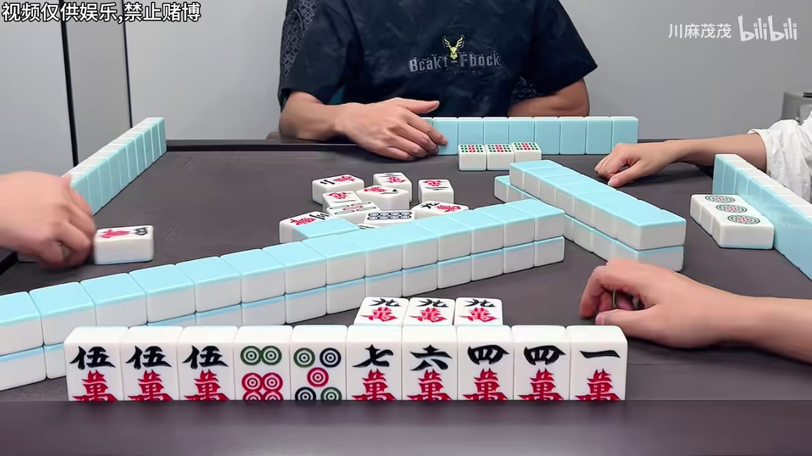
| 框 | 类型 | 牌 | 说明 |
|---|---|---|---|
| 20 | isolated_label | w4 | 标为 seat_left,但紧邻的 3 张牌全部是 my_hand |
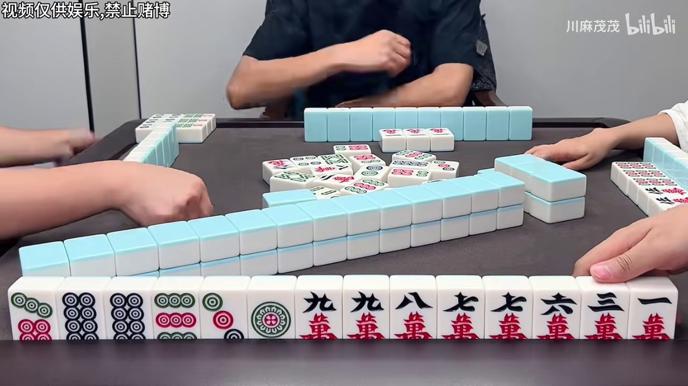
| 框 | 类型 | 牌 | 说明 |
|---|---|---|---|
| 18 | dead_label | t9 | 标签 `opponent_wall` 不在五区体系内,算法永不输出 → 必错 |
| 18 | isolated_label | t9 | 标为 opponent_wall,但紧邻的 3 张牌全部是 seat_right |
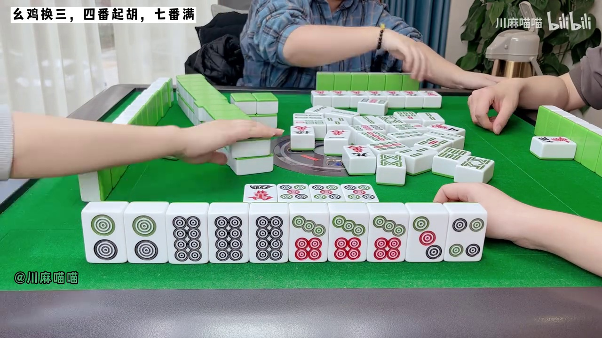
| 框 | 类型 | 牌 | 说明 |
|---|---|---|---|
| 35 | isolated_label | w5 | 标为 seat_right,但紧邻的 3 张牌全部是 river |
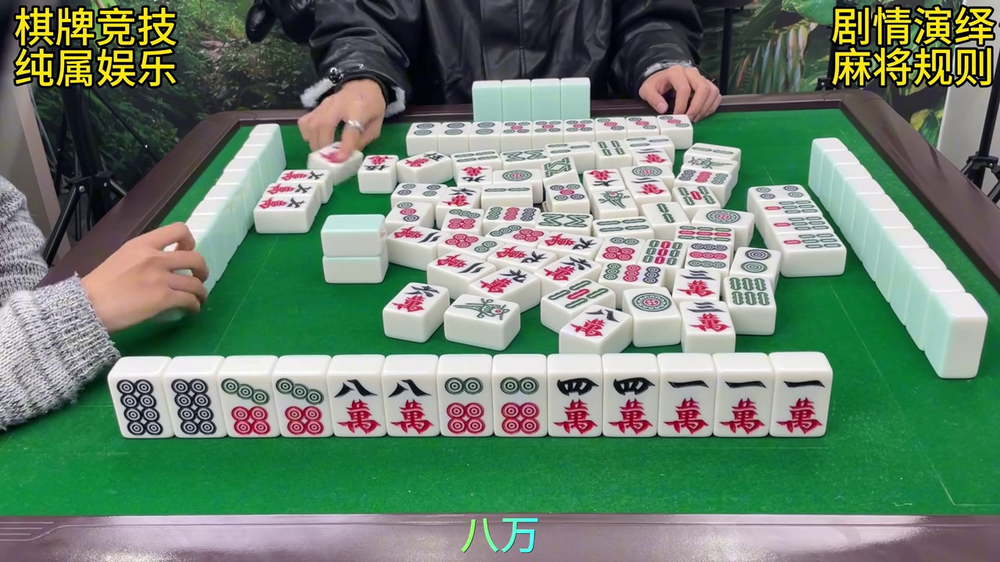
| 框 | 类型 | 牌 | 说明 |
|---|---|---|---|
| 13 | zone_outlier | w8 | 标为 river,但相对大小 1.67 偏离该区均值 0.95 达 3.0σ |
| 33 | zone_outlier | w3 | 标为 river,但相对大小 1.68 偏离该区均值 0.95 达 3.1σ |
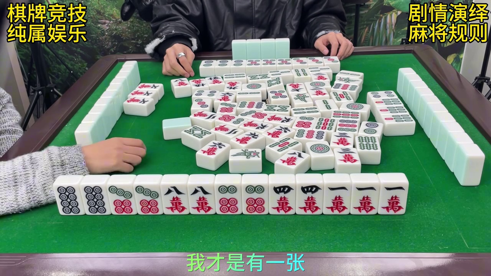
| 框 | 类型 | 牌 | 说明 |
|---|---|---|---|
| 40 | dead_label | t4 | 标签 `opponent_wall` 不在五区体系内,算法永不输出 → 必错 |
| 53 | dead_label | t3 | 标签 `opponent_wall` 不在五区体系内,算法永不输出 → 必错 |
| — | missing_box | ? | 检测器在此处以 0.92 置信度发现一张牌,但没有标注框(最佳 IoU 0.01) |
| — | missing_box | ? | 检测器在此处以 0.92 置信度发现一张牌,但没有标注框(最佳 IoU 0.00) |
| — | missing_box | ? | 检测器在此处以 0.91 置信度发现一张牌,但没有标注框(最佳 IoU 0.03) |
| — | missing_box | ? | 检测器在此处以 0.91 置信度发现一张牌,但没有标注框(最佳 IoU 0.01) |
| — | missing_box | ? | 检测器在此处以 0.90 置信度发现一张牌,但没有标注框(最佳 IoU 0.00) |
| — | missing_box | ? | 检测器在此处以 0.90 置信度发现一张牌,但没有标注框(最佳 IoU 0.00) |
| — | missing_box | ? | 检测器在此处以 0.89 置信度发现一张牌,但没有标注框(最佳 IoU 0.00) |
| — | missing_box | ? | 检测器在此处以 0.88 置信度发现一张牌,但没有标注框(最佳 IoU 0.02) |
| — | missing_box | ? | 检测器在此处以 0.88 置信度发现一张牌,但没有标注框(最佳 IoU 0.05) |
| — | missing_box | ? | 检测器在此处以 0.87 置信度发现一张牌,但没有标注框(最佳 IoU 0.00) |
| — | missing_box | ? | 检测器在此处以 0.87 置信度发现一张牌,但没有标注框(最佳 IoU 0.02) |
| — | missing_box | ? | 检测器在此处以 0.87 置信度发现一张牌,但没有标注框(最佳 IoU 0.00) |
| — | missing_box | ? | 检测器在此处以 0.86 置信度发现一张牌,但没有标注框(最佳 IoU 0.00) |
| — | missing_box | ? | 检测器在此处以 0.85 置信度发现一张牌,但没有标注框(最佳 IoU 0.00) |
| — | missing_box | ? | 检测器在此处以 0.84 置信度发现一张牌,但没有标注框(最佳 IoU 0.00) |
| — | missing_box | ? | 检测器在此处以 0.84 置信度发现一张牌,但没有标注框(最佳 IoU 0.00) |
| — | missing_box | ? | 检测器在此处以 0.83 置信度发现一张牌,但没有标注框(最佳 IoU 0.00) |
| — | missing_box | ? | 检测器在此处以 0.83 置信度发现一张牌,但没有标注框(最佳 IoU 0.00) |
| — | missing_box | ? | 检测器在此处以 0.83 置信度发现一张牌,但没有标注框(最佳 IoU 0.06) |
| — | missing_box | ? | 检测器在此处以 0.82 置信度发现一张牌,但没有标注框(最佳 IoU 0.00) |
| — | missing_box | ? | 检测器在此处以 0.80 置信度发现一张牌,但没有标注框(最佳 IoU 0.00) |
| — | missing_box | ? | 检测器在此处以 0.80 置信度发现一张牌,但没有标注框(最佳 IoU 0.04) |
| — | missing_box | ? | 检测器在此处以 0.79 置信度发现一张牌,但没有标注框(最佳 IoU 0.00) |
| 29 | isolated_label | t7 | 标为 seat_right,但紧邻的 3 张牌全部是 river |
| 40 | isolated_label | t4 | 标为 opponent_wall,但紧邻的 3 张牌全部是 river |
| 53 | isolated_label | t3 | 标为 opponent_wall,但紧邻的 3 张牌全部是 river |
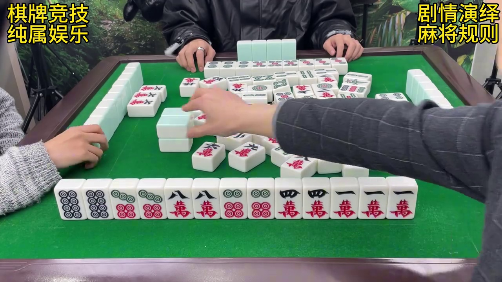
| 框 | 类型 | 牌 | 说明 |
|---|---|---|---|
| 10 | zone_outlier | w6 | 标为 river,但相对大小 1.92 偏离该区均值 0.95 达 4.0σ |
| 12 | zone_outlier | w9 | 标为 river,但相对大小 1.94 偏离该区均值 0.95 达 4.1σ |
| 47 | zone_outlier | w8 | 标为 river,但相对大小 1.89 偏离该区均值 0.95 达 3.9σ |
| 32 | isolated_label | b4 | 标为 seat_right,但紧邻的 3 张牌全部是 river |
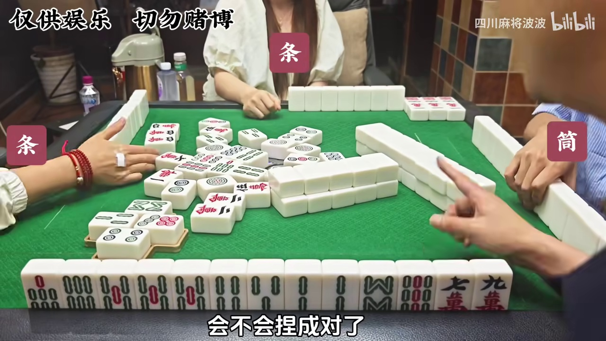
| 框 | 类型 | 牌 | 说明 |
|---|---|---|---|
| 35 | dead_label | b3 | 标签 `opponent_wall` 不在五区体系内,算法永不输出 → 必错 |
| 18 | zone_outlier | b4 | 标为 river,但纵向位置 0.69 偏离该区均值 0.43 达 3.1σ |
| 35 | isolated_label | b3 | 标为 opponent_wall,但紧邻的 3 张牌全部是 river |
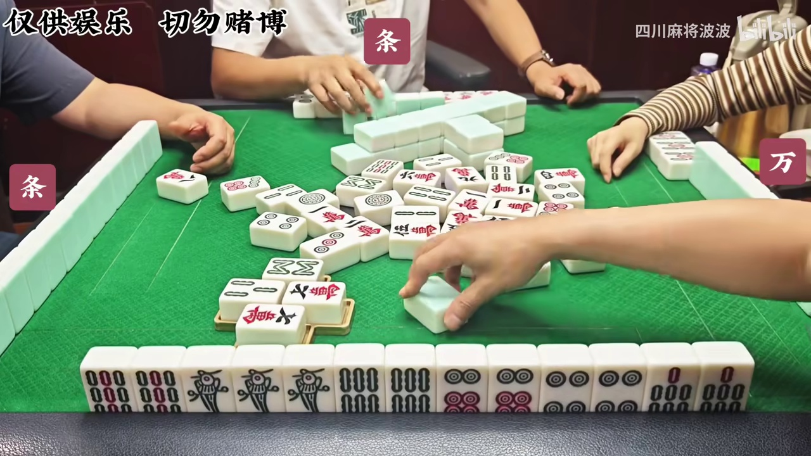
| 框 | 类型 | 牌 | 说明 |
|---|---|---|---|
| 31 | zone_outlier | w7 | 标为 river,但纵向位置 0.69 偏离该区均值 0.43 达 3.1σ |
| 13 | isolated_label | w8 | 标为 seat_left,但紧邻的 3 张牌全部是 river |
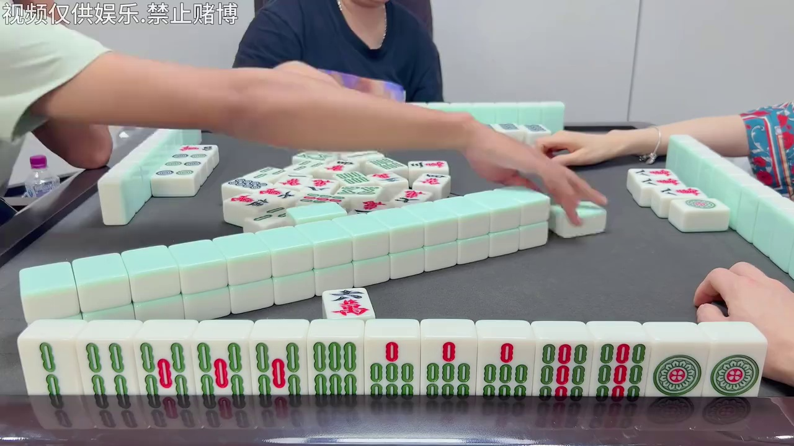
| 框 | 类型 | 牌 | 说明 |
|---|---|---|---|
| — | missing_box | ? | 检测器在此处以 0.75 置信度发现一张牌,但没有标注框(最佳 IoU 0.06) |
| — | missing_box | ? | 检测器在此处以 0.64 置信度发现一张牌,但没有标注框(最佳 IoU 0.00) |
| 35 | zone_outlier | t5 | 标为 seat_left,但纵向位置 0.92 偏离该区均值 0.42 达 3.8σ |
| 35 | isolated_label | t5 | 标为 seat_left,但紧邻的 3 张牌全部是 my_hand |
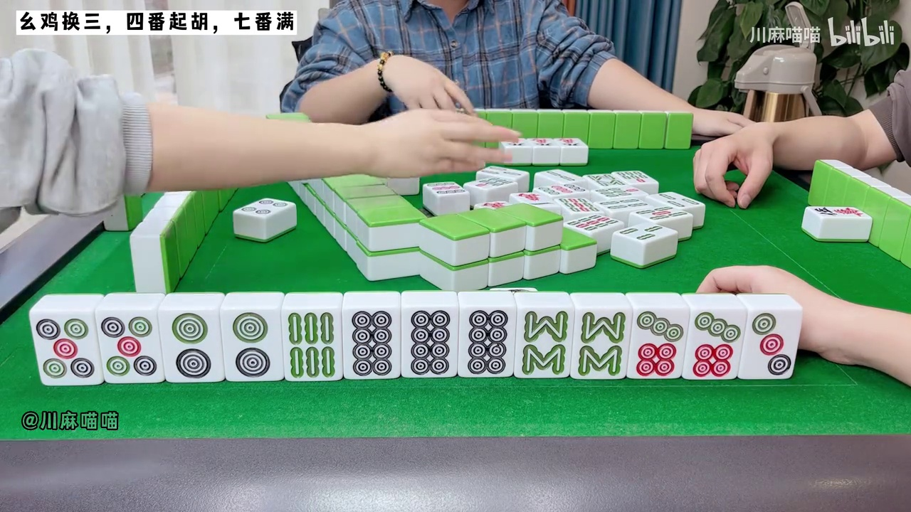
| 框 | 类型 | 牌 | 说明 |
|---|---|---|---|
| 27 | isolated_label | b4 | 标为 seat_left,但紧邻的 3 张牌全部是 my_hand |
| — | missing_box | ? | 检测器在此处以 0.57 置信度发现一张牌,但没有标注框(最佳 IoU 0.02) |
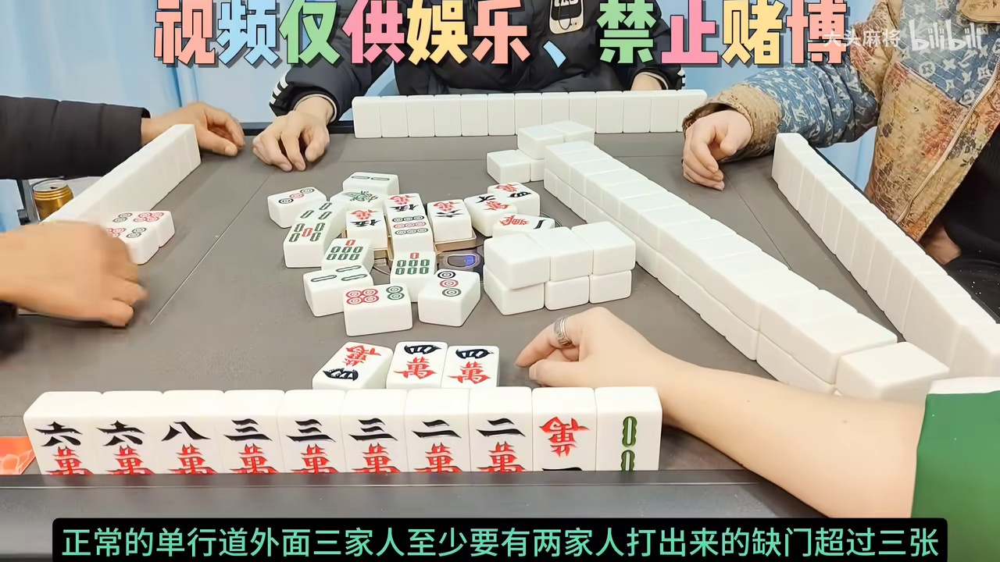
| 框 | 类型 | 牌 | 说明 |
|---|---|---|---|
| 15 | zone_outlier | w6 | 标为 seat_left,但横向位置 0.06 偏离该区均值 0.23 达 3.1σ |
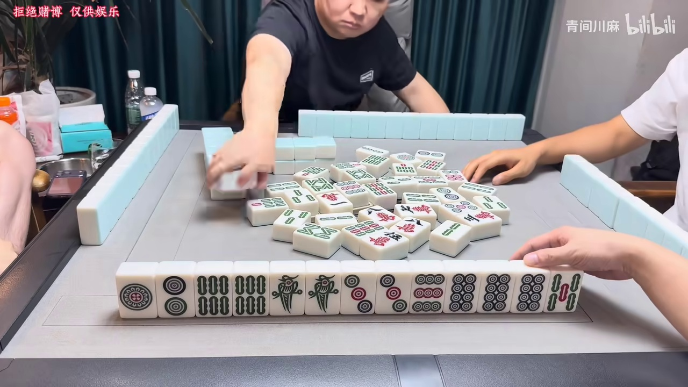
| 框 | 类型 | 牌 | 说明 |
|---|---|---|---|
| 38 | dead_label | t7 | 标签 `opponent_wall` 不在五区体系内,算法永不输出 → 必错 |
| 38 | isolated_label | t7 | 标为 opponent_wall,但紧邻的 3 张牌全部是 river |